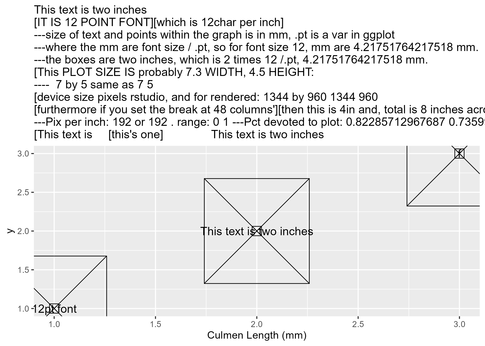
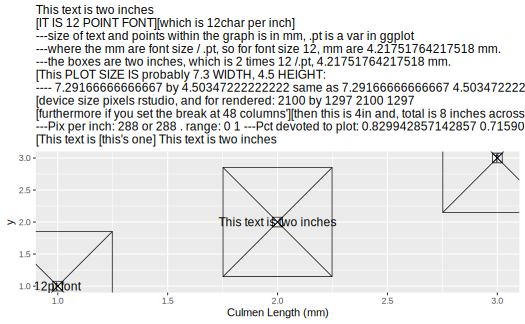

[[1]]
[1] "logsum_trip_mode_AS_trips"
[[2]]
[1] "duration_door_to_door"Graphs SF Bay Summer 2022
setup
Define Variables
Y variables:
Heterogeneity:
[[1]]
[1] "ownCarYNLabel"
[[2]]
[1] "l_inc_HiLo10"TEST of graphics
Make sure width and size are consistent with what i see. This is what I see in the GUI, and
mmmmmThis text is two inches:

This is the pdf version, and
mmmmmThis text is two inches:
This is the png version, and
mmmmmThis text is two inches:

This is the svg version, and
mmmmmThis text is two inches:
